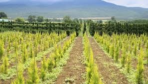
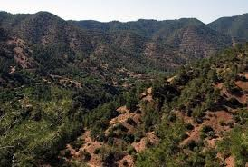
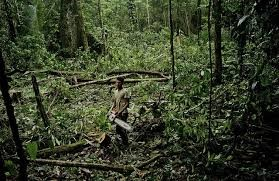
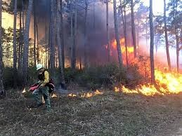
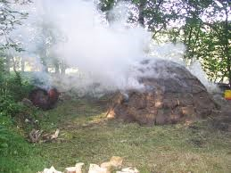

Forests
1.Afforestation
- Afforestation is a proactive method used to improve forests.
- Afforestation is the planting of trees for commercial purposes. Afforestation is a way to create a forest.
- Afforestation occurs when the planting of trees is introduced to an area that previously had no trees.
- This creates habitat for wildlife, recreational areas, and commercial use while not causing harm to natural forests.
- 
2. Reforestation
- Reforestation is another method to sustain forests by improving existing forested areas.
- Reforestation is a method of planting trees in an existing forested area.
- This method is used in reaction to deforestation.
- When forests are removed without reestablishment they can be reforested by planting trees in the same area to rebuild the existing forest.
- 
3. Selective logging
- Selective logging is another method used to meet the needs of both the forests and humans seeking economical resources.
- Selective logging is the removal of trees within a stand based on size limitations.
- This technique allows for forest regeneration to occur between and after the selective harvest cycles.
- 
4. Controlled burn
- Although it can be threatening if it is not controlled, fire is a successful way to conserve forest resources. Controlled burn is a technique that is used to manage forests.
- Fire can benefit the ecosystem within a forest. Fire is natural and it is also a tool of foresters used to improve the forests.
- It renews the forest undergrowth and also stimulates the germination of trees species.
- In some species of trees such as the Sequoia, seedlings remain in dormancy until broken by fire. As a result, these species cannot reproduce without fire.
- 
5. Reduce Bush burning
- This has greatly led to deforestation with its related problems
- 